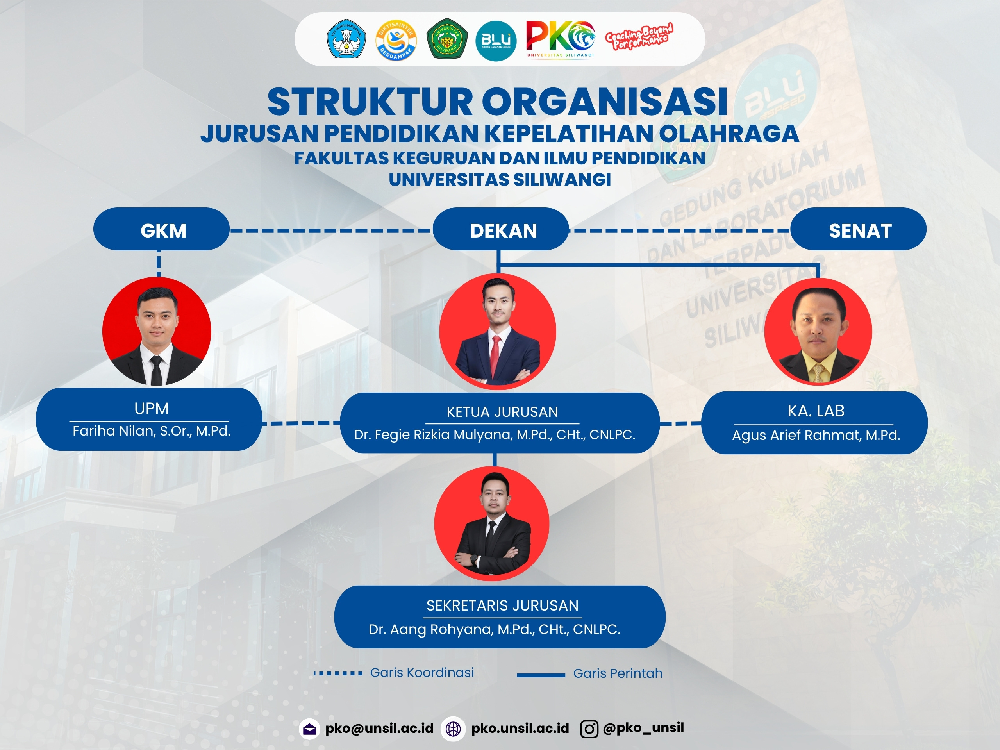

Struktur Organisasi Program Studi
Berikut adalah bagan struktur organisasi Program Studi Pendidikan Kepelatihan Olahraga (PKO) Fakultas Keguruan dan Ilmu Pendidikan, Universitas Siliwangi.



Berikut adalah bagan struktur organisasi Program Studi Pendidikan Kepelatihan Olahraga (PKO) Fakultas Keguruan dan Ilmu Pendidikan, Universitas Siliwangi.
